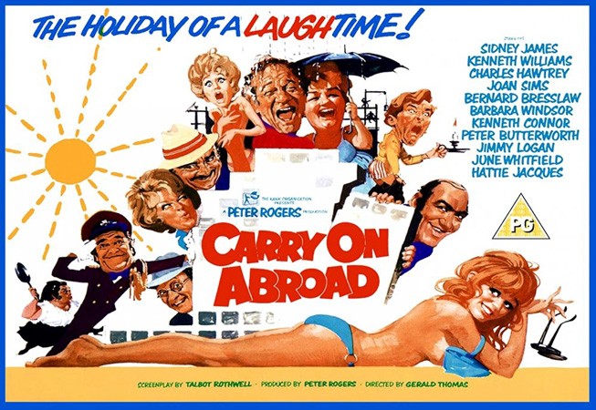
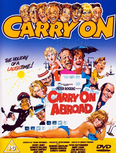

Peter Rogers
Derek Francis
The film opens with pub landlord and frequent holidaymaker Vic Flange (Sid James) openly flirting with the sassy saucepot widow Sadie Tompkins (Barbara Windsor) as his battleaxe wife, Cora (Joan Sims), looks on with disdain. Their twitching friend Harry (Jack Douglas) arrives and lets slip that the package holiday Vic has booked to the Mediterranean island Elsbels (a pun on the slang expression "Hell's Bells") which is on the Costa Bomm, also includes Sadie, much to Cora's outrage. Cora, who avoids holidays because she hates flying, suddenly decides to accompany her boorish husband on the trip, to ensure he keeps away from Sadie.
The next day, Stuart Farquhar (Kenneth Williams), the representative of Wundatours Travel Agency, and his sexy, seductive assistant, Moira Plunkett (Gail Grainger), welcome the motley passengers. Among them are the henpecked and sex-starved Stanley Blunt (Kenneth Connor) and his overbearing, conservative, frigid wife, Evelyn (June Whitfield); a drunken, bowler-hatted mummy's boy, Eustace Tuttle (Charles Hawtrey); brash Scotsman Bert Conway (Jimmy Logan); young and beautiful friends Lily and Marge (Sally Geeson and Carol Hawkins respectively), who are each hoping to find a man to fall in love with;and a party of monks, including Brother Bernard (Bernard Bresslaw) a timid young monk who has difficultly fitting into his new path of life.
Unfortunately, upon their arrival they discover their hotel is only half-finished; the builders have just quit suddenly for unspecified reasons, leaving the remaining five floors unfinished. Distraught manager Pepe (Peter Butterworth) desperately tries to run the place in myriad different guises – the manager, the doorman and the porter – and the chef is his irate, ill-tempered wife, Floella (Hattie Jacques), who battles repeatedly with the temperamental stove while their handsome, womanising son Georgio (Ray Brooks) idles behind the bar. The hotel also hides an assortment of faults and Pepe is soon overrun with complaints: Evelyn finds Mr Tuttle in her bath, Vic discovers Sadie naked in his shower; Lily and Marge's wardrobe has no back to it, allowing them to be accidentally seen by Brother Bernard in the opposite room; sand pours out of Moira's taps; the lavatory drenches Bert. The phone system itself is faulty and the guests end up complaining to each other for much of the time. Nevertheless, Stuart is determined to ensure everyone has a good time.
Dinner the first night is foul and made even more unpleasant by the smoke from the burning food in the kitchen forces the motley group of holiday-makers to open the windows, prompting the arrival of mosquitos. Although agreeing to play leapfrog with Tuttle, Lily and Marge have their eyes on other things. Marge takes a shine to Brother Bernard, while Lily lures the dashing Nicholas (David Kernan) away from his jealous (and implied gay) friend, Robin (John Clive), and Marge and Bernard develop an innocent romance. Meanwhile, Stanley attempts to seduce Cora whilst his nagging wife is not present, but Cora is more interested in keeping Vic away from Sadie, who grows fond of Bert. Vic tries to put Bert off Sadie by telling him that she is a black widow who murdered her two previous husbands, when in fact both were firemen who died on the job.
The next day, while most of the party go off on an excursion to the nearby village, Stanley ensures his wife is left behind so that he can spend the day attempting to woo Cora. Vic samples a local drink, "Santa Cecelia's Elixir", which blesses the drinker with X-ray vision and he is able to see through women's clothing. However, the tourists are arrested for causing a riot at Madame Fifi's (Olga Lowe) local brothel after Vic, Bert and Eustace annoy the girls there; left-behind Evelyn is seduced by Georgio, which leads to her abandoning her frigid manners.
In the local prison, Miss Plunkett seduces the Chief of Police, and the tourists are released. Back at the hotel, Mrs Blunt resumes her sex life with a surprised Stanley after having a brief affair with Georgio. The last night in the hotel starts as a success, with all the guests at ease with each other thanks to the punch being spiked with Santa Cecelia's Elixir. Midway through the night it begins to rain, and the hotel is shown to have been constructed on a dry river bed. As the hotel begins to collapse Pepe finally loses his patience and sanity with the guests, who party on, oblivious to the disintegrating hotel. The film then shifts forward an unspecified period of time, and shows an Elsbels reunion at Vic & Cora's pub. All the guests are happy and reminisce about the holiday they barely survived.
Filming dates: 17 April - 26 May 1972 (The previous entry – Carry On Matron – was released during filming).
Interiors: Pinewood Studios, Buckinghamshire.
Exteriors: (1) High Street, Slough, Berkshire, (2) Carpark 2 – Pinewood Studios, Buckinghamshire.
The film's opening credits also include 'Sun Tan Lo Tion' (suntan lotion) as 'Technical Director'. The brothel keeper is played by Olga Lowe, one of the first actresses to work with Sid James when he arrived in the UK in 1946. Lowe was also the actress on stage with James on the night he died in Sunderland.
Along with the previous film in the series (Carry On Matron), it features the highest number of the regular Carry On team. The only members missing are Jim Dale and Terry Scott, both of whom had the left the series by this point (although Dale would return belatedly for Carry On Columbus in 1992) and, as a result, were never in a Carry On film together.
